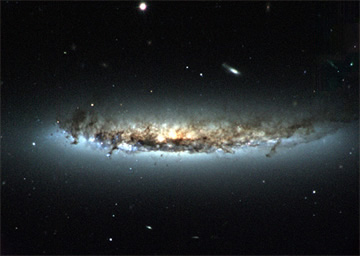

Credit: H. Crowl (Yale University) and WIYN/NOAO/AURA/NSF
Galaxy clusters are permeated by hot, X-ray emitting gas known as the intra-cluster medium. As individual galaxies move within such clusters, they experience this intra-cluster gas as a ‘wind’ – much like the wind experienced by a moving bicyclist, even on a still day. ‘Ram pressure stripping’ occurs if this wind is strong enough to overcome the gravitational potential of the galaxy to remove the gas contained within it.
Evidence for ram pressure stripping can be found in many galaxy clusters. For example, NGC 4402 (right), which is currently falling into the Virgo cluster, shows several clear indicators that ram pressure stripping is at work:
- The disk of dust and gas appears bowed. This indicates that the galaxy is having trouble holding onto the loosely bound dust and gas in the outer regions of the disk against the pressure of the ‘wind’.
- The stellar disk (blue) appears to extend well beyond the star forming disk of dust and gas. This observation suggests that the loosely bound dust and gas in the outer regions of the disk has been stripped from the galaxy after the formation of these stars.
- Streamers of dust and gas can be seen trailing behind the motion of the galaxy, obscuring and reddening the stars behind (top of the galaxy in the image). At the same time, the ‘wind’ has pushed the dust and gas that would normally be found ahead of the motion of the galaxy up into the galaxy itself. This has revealed bright blue stars along the leading edge of the galaxy (bottom of the galaxy in the image).
The result of ram pressure stripping is a galaxy which contains very little cold gas. This effectively halts star formation in the galaxy, supporting the belief that ram pressure stripping could be one of the processes responsible for the morphology density relation.